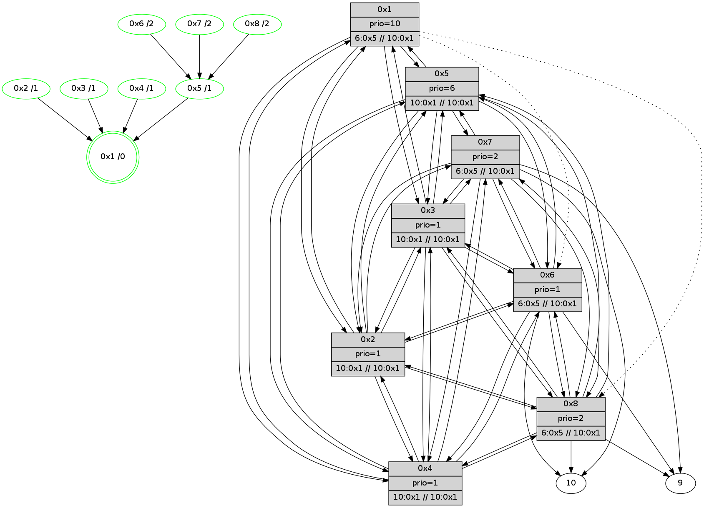

>> << IDX [start] -100 -25 -5 +0 +5 +25 +100 [400.496266842]
 Previous packets
395.009445 beacon04(11f6) #0 coord=01,02,03,04,05,06,07,08,0a,09 cycle=688.0ms assoc 64 9c d4
395.019446 beacon05(11f6) #0 coord=01,02,03,04,05,06,07,08,0a,09 cycle=688.0ms assoc 64 e6 99
395.029448 beacon06(11f6) #0 coord=01,02,03,04,05,06,07,08,0a,09 cycle=688.0ms assoc 64 68 4e
395.039446 beacon07(11f6) #0 coord=01,02,03,04,05,06,07,08,0a,09 cycle=688.0ms assoc 64 12 03
395.049450 beacon08(11f6) #0 coord=01,02,03,04,05,06,07,08,0a,09 cycle=688.0ms assoc 64 97 92
395.122483 [Color(3) seq=0 @0:0 prio=1]
395.131183 [Color(2) seq=0 @0:0 prio=1]
395.150432 [Color(5) seq=0 @0:0 prio=6]
395.152835 [Hello(1): seq=198 sym=5,3,2,4 asym=8,6 sysInfo=coloring-mode-on,ColoringModeRequestCalled stat=5:10,0,2,2/3:0,1,1,13/2:11,1,0,14/4:14,0,1,14/8:12,0,14,2/6:9,0,15,12]
395.156625 [Color(1) seq=0 @0:0 prio=10]
395.182212 [Color(6) seq=0 @0:0 prio=1]
395.187869 [Color(7) seq=0 @0:0 prio=2]
395.204113 [Color(4) seq=0 @0:0 prio=1]
----------------------------------------------------------------------
395.767444 beacon01(11f6) #0 coord=01,02,03,04,05,06,07,08,0a,09 cycle=688.0ms assoc
-- color-indic=1 64 c6 4c
395.777598 beacon02(11f6) #0 coord=01,02,03,04,05,06,07,08,0a,09 cycle=688.0ms assoc 64 55 7d
395.787580 beacon03(11f6) #0 coord=01,02,03,04,05,06,07,08,0a,09 cycle=688.0ms assoc 64 2f 30
395.797579 beacon04(11f6) #0 coord=01,02,03,04,05,06,07,08,0a,09 cycle=688.0ms assoc 64 58 da
395.807580 beacon05(11f6) #0 coord=01,02,03,04,05,06,07,08,0a,09 cycle=688.0ms assoc 64 22 97
395.817580 beacon06(11f6) #0 coord=01,02,03,04,05,06,07,08,0a,09 cycle=688.0ms assoc 64 ac 40
395.827581 beacon07(11f6) #0 coord=01,02,03,04,05,06,07,08,0a,09 cycle=688.0ms assoc 64 d6 0d
395.837585 beacon08(11f6) #0 coord=01,02,03,04,05,06,07,08,0a,09 cycle=688.0ms assoc 64 53 9c
395.902223 [Hello(3): seq=198 sym=1,2,7,5,6,8,4 sysInfo=coloring-mode-on,ColoringModeIndicationCalled stat=1:6,1,2,0/2:11,1,15,14/7:9,1,0,9/5:7,1,15,2/6:3,1,0,12/8:8,0,14,2/4:14,0,1,13]
395.904624 [Hello(2): seq=198 sym=1,7,5,3,8,4,6 sysInfo=coloring-mode-on,ColoringModeIndicationCalled stat=1:5,1,2,0/7:8,1,0,10/5:9,1,1,2/3:10,1,15,11/8:8,0,14,2/4:10,0,1,13/6:14,1,15,12]
395.927128 [STC(1) #0.20 new-neigh,stable,to-color d=0]
395.953209 [Hello(7): seq=198 sym=10,5,6,8,3,2,4,9 sysInfo=coloring-mode-on,ColoringModeIndicationCalled stat=10:11,1,12,8/5:1,0,1,2/6:0,1,15,12/8:13,1,15,3/3:3,1,0,12/2:2,1,14,11/4:15,0,12,10/9:10,1,0,3]
395.964907 [Hello(8): seq=198 sym=2,7,5,6,3,4,10,9 sysInfo=coloring-mode-on,ColoringModeIndicationCalled stat=2:8,1,15,13/7:4,1,0,10/5:0,0,0,2/6:0,1,14,11/3:13,1,15,12/4:10,0,15,12/10:14,1,10,7/9:3,0,9,2]
395.979381 [Hello(5): seq=198 sym=1,2,7,6,3,8,4 sysInfo=hasWarning,coloring-mode-on,ColoringModeIndicationCalled stat=1:6,1,3,0/2:12,1,0,13/7:13,1,0,10/6:6,1,15,12/3:14,1,1,12/8:10,0,14,2/4:12,1,15,12]
395.984208 [STC(5)->1 #0.20 new-neigh,stable,to-color d=1]
396.001101 [Hello(4): seq=198 sym=1,2,5,6,3,8,7 sysInfo=coloring-mode-on,ColoringModeIndicationCalled stat=1:5,1,4,0/2:13,1,1,13/5:15,1,3,2/6:4,1,0,12/3:1,1,15,11/8:10,0,13,2/7:15,1,0,10]
396.005894 [STC(4)->1 #0.20 new-neigh,stable,to-color d=1]
396.010805 [Hello(6): seq=198 sym=10,7,5,3,8,4,2,9 sysInfo=hasWarning,coloring-mode-on,ColoringModeIndicationCalled stat=10:9,1,10,7/7:4,1,0,10/5:0,0,2,2/3:1,1,0,13/8:12,1,15,3/4:5,0,15,12/2:4,1,14,11/9:15,0,0,3]
396.013522 [STC(6)->5-.->1 #0.20 new-neigh,stable,to-color d=2]
----------------------------------------------------------------------
396.555582 beacon01(11f6) #0 coord=01,02,03,04,05,06,07,08,0a,09 cycle=688.0ms assoc
-- color-indic=1 64 7a 49
396.565757 beacon02(11f6) #0 coord=01,02,03,04,05,06,07,08,0a,09 cycle=688.0ms assoc 64 e9 78
396.575718 beacon03(11f6) #0 coord=01,02,03,04,05,06,07,08,0a,09 cycle=688.0ms assoc 64 93 35
396.585716 beacon04(11f6) #0 coord=01,02,03,04,05,06,07,08,0a,09 cycle=688.0ms assoc 64 e4 df
396.595717 beacon05(11f6) #0 coord=01,02,03,04,05,06,07,08,0a,09 cycle=688.0ms assoc 64 9e 92
396.605717 beacon06(11f6) #0 coord=01,02,03,04,05,06,07,08,0a,09 cycle=688.0ms assoc 64 10 45
396.615717 beacon07(11f6) #0 coord=01,02,03,04,05,06,07,08,0a,09 cycle=688.0ms assoc 64 6a 08
396.625722 beacon08(11f6) #0 coord=01,02,03,04,05,06,07,08,0a,09 cycle=688.0ms assoc 64 ef 99
396.674494 [Hello(1): seq=199 sym=5,3,2,4 asym=8,6 sysInfo=hasWarning,coloring-mode-on,ColoringModeRequestCalled stat=5:11,0,3,2/3:1,1,1,13/2:12,1,0,14/4:15,1,2,14/8:13,0,14,2/6:10,1,0,12]
396.681315 [Color(8) seq=1 @0:0 prio=2]
396.683893 [STC(3)->1 #0.20 new-neigh,stable,to-color d=1]
396.686794 [Color(3) seq=1 @0:0 prio=1]
396.737477 [Color(5) seq=1 @0:0 prio=6 >10.@1,2.@7,2.@8,1.@2]
396.742315 [Color(4) seq=1 @0:0 prio=1 >10.@1,6.@5,2.@7,2.@8]
396.749295 [Color(6) seq=1 @0:0 prio=1 >6.@5,2.@7,2.@8,1.@2]
396.757761 [STC(7)->5-.->1 #0.20 new-neigh,stable,to-color d=2]
396.760057 [Color(7) seq=1 @0:0 prio=2 >6.@5,2.@8,1.@2,1.@3]
396.779809 [STC(2)->1 #0.20 new-neigh,stable,to-color d=1]
396.783691 [Color(2) seq=1 @0:0 prio=1 >10.@1,6.@5,2.@7,2.@8]
----------------------------------------------------------------------
397.343718 beacon01(11f6) #0 coord=01,02,03,04,05,06,07,08,0a,09 cycle=688.0ms assoc
-- color-indic=1 64 ee 90
397.353878 beacon02(11f6) #0 coord=01,02,03,04,05,06,07,08,0a,09 cycle=688.0ms assoc 64 7d a1
397.363856 beacon03(11f6) #0 coord=01,02,03,04,05,06,07,08,0a,09 cycle=688.0ms assoc 64 07 ec
397.373854 beacon04(11f6) #0 coord=01,02,03,04,05,06,07,08,0a,09 cycle=688.0ms assoc 64 70 06
397.383854 beacon05(11f6) #0 coord=01,02,03,04,05,06,07,08,0a,09 cycle=688.0ms assoc 64 0a 4b
397.393854 beacon06(11f6) #0 coord=01,02,03,04,05,06,07,08,0a,09 cycle=688.0ms assoc 64 84 9c
397.403854 beacon07(11f6) #0 coord=01,02,03,04,05,06,07,08,0a,09 cycle=688.0ms assoc 64 fe d1
397.413858 beacon08(11f6) #0 coord=01,02,03,04,05,06,07,08,0a,09 cycle=688.0ms assoc 64 7b 40
397.461162 [Hello(8): seq=199 sym=2,7,5,6,3,4,10,9 sysInfo=coloring-mode-on,ColoringModeIndicationCalled stat=2:8,2,0,13/7:4,2,1,10/5:1,1,1,2/6:1,2,15,11/3:13,1,0,12/4:11,1,0,12/10:14,1,11,7/9:3,1,9,2]
397.467450 [Hello(4): seq=199 sym=1,2,5,6,3,8,7 sysInfo=coloring-mode-on,ColoringModeIndicationCalled stat=1:6,1,4,0/2:13,2,2,13/5:15,2,3,2/6:5,2,1,12/3:1,2,0,11/8:11,1,13,2/7:15,2,1,10]
397.475800 [Hello(2): seq=199 sym=1,7,5,3,8,4,6 sysInfo=hasWarning,coloring-mode-on,ColoringModeIndicationCalled stat=1:6,2,3,0/7:9,2,1,10/5:10,2,2,2/3:10,2,0,11/8:10,1,14,2/4:12,1,2,13/6:15,2,0,12]
397.489435 [Hello(6): seq=199 sym=10,7,5,3,8,4,2,9 sysInfo=hasWarning,coloring-mode-on,ColoringModeIndicationCalled stat=10:10,1,11,7/7:4,2,1,10/5:0,1,2,2/3:1,2,1,13/8:13,2,15,3/4:6,1,15,12/2:5,2,15,11/9:15,1,0,3]
397.493292 [Hello(3): seq=199 sym=1,2,7,5,6,8,4 sysInfo=hasWarning,coloring-mode-on,ColoringModeIndicationCalled stat=1:7,2,3,0/2:13,2,0,14/7:10,2,1,9/5:8,2,0,2/6:4,2,1,12/8:10,1,14,2/4:0,1,2,13]
397.502193 [Hello(7): seq=199 sym=10,5,6,8,3,2,4,9 sysInfo=coloring-mode-on,ColoringModeIndicationCalled stat=10:12,1,13,8/5:2,1,2,2/6:2,2,0,12/8:15,2,0,3/3:4,1,1,12/2:3,2,15,11/4:1,1,13,10/9:10,2,0,3]
397.558367 [Hello(5): seq=199 sym=1,2,7,6,3,8,4 sysInfo=hasWarning,coloring-mode-on,ColoringModeIndicationCalled stat=1:7,1,3,0/2:13,2,1,13/7:14,2,1,10/6:8,2,0,12/3:15,2,2,12/8:11,1,14,2/4:14,2,0,12]
----------------------------------------------------------------------
398.131856 beacon01(11f6) #0 coord=01,02,03,04,05,06,07,08,0a,09 cycle=688.0ms assoc
-- color-indic=1 64 52 95
398.142013 beacon02(11f6) #0 coord=01,02,03,04,05,06,07,08,0a,09 cycle=688.0ms assoc 64 c1 a4
398.151991 beacon03(11f6) #0 coord=01,02,03,04,05,06,07,08,0a,09 cycle=688.0ms assoc 64 bb e9
398.161993 beacon04(11f6) #0 coord=01,02,03,04,05,06,07,08,0a,09 cycle=688.0ms assoc 64 cc 03
398.171991 beacon05(11f6) #0 coord=01,02,03,04,05,06,07,08,0a,09 cycle=688.0ms assoc 64 b6 4e
398.181993 beacon06(11f6) #0 coord=01,02,03,04,05,06,07,08,0a,09 cycle=688.0ms assoc 64 38 99
398.191992 beacon07(11f6) #0 coord=01,02,03,04,05,06,07,08,0a,09 cycle=688.0ms assoc 64 42 d4
398.201996 beacon08(11f6) #0 coord=01,02,03,04,05,06,07,08,0a,09 cycle=688.0ms assoc 64 c7 45
398.238447 [Color(3) seq=2 @0:0 prio=1 >10.@1,6.@5,2.@7,2.@8]
398.263143 [Hello(1): seq=200 sym=5,3,2,4 asym=8,6 sysInfo=hasWarning,coloring-mode-on,ColoringModeRequestCalled stat=5:12,1,3,2/3:2,3,2,13/2:13,2,1,14/4:0,2,2,14/8:14,1,14,2/6:11,2,0,12]
398.266603 [Color(1) seq=2 @0:0 prio=10 >6.@5,1.@2,1.@3,1.@4 >>10.@1,6.@5,2.@7]
398.269112 [Color(8) seq=2 @0:0 prio=2 >6.@5,2.@7,1.@2,1.@3 >>10.@1,6.@5,2.@7]
398.296019 [Color(2) seq=2 @0:0 prio=1 >10.@1,6.@5,2.@7,2.@8 >>10.@1,6.@5,2.@7]
398.352729 [Color(7) seq=2 @0:0 prio=2 >6.@5,2.@8,1.@2,1.@3 >>10.@1,6.@5,2.@7]
398.356978 [Color(6) seq=2 @0:0 prio=1 >6.@5,2.@7,2.@8,1.@2 >>10.@1,6.@5,2.@7]
398.361383 [Color(5) seq=2 @0:0 prio=6 >10.@1,2.@7,2.@8,1.@2 >>10.@1,6.@5,2.@7]
398.364897 [Color(4) seq=2 @0:0 prio=1 >10.@1,6.@5,2.@7,2.@8 >>10.@1,6.@5,2.@7]
----------------------------------------------------------------------
398.919994 beacon01(11f6) #0 coord=01,02,03,04,05,06,07,08,0a,09 cycle=688.0ms assoc
-- color-indic=1 64 96 9b
398.930146 beacon02(11f6) #0 coord=01,02,03,04,05,06,07,08,0a,09 cycle=688.0ms assoc 64 05 aa
398.940129 beacon03(11f6) #0 coord=01,02,03,04,05,06,07,08,0a,09 cycle=688.0ms assoc 64 7f e7
398.950129 beacon04(11f6) #0 coord=01,02,03,04,05,06,07,08,0a,09 cycle=688.0ms assoc 64 08 0d
398.960132 beacon05(11f6) #0 coord=01,02,03,04,05,06,07,08,0a,09 cycle=688.0ms assoc 64 72 40
398.970130 beacon06(11f6) #0 coord=01,02,03,04,05,06,07,08,0a,09 cycle=688.0ms assoc 64 fc 97
398.980130 beacon07(11f6) #0 coord=01,02,03,04,05,06,07,08,0a,09 cycle=688.0ms assoc 64 86 da
398.990134 beacon08(11f6) #0 coord=01,02,03,04,05,06,07,08,0a,09 cycle=688.0ms assoc 64 03 4b
399.049415 [Hello(8): seq=200 sym=2,7,5,6,3,4,10,9 sysInfo=coloring-mode-on,ColoringModeIndicationCalled stat=2:9,3,0,13/7:5,3,1,10/5:2,2,1,2/6:2,3,15,11/3:14,2,0,12/4:12,2,0,12/10:14,1,11,7/9:5,2,10,2]
399.083007 [Hello(5): seq=200 sym=1,2,7,6,3,8,4 sysInfo=hasWarning,coloring-mode-on,ColoringModeIndicationCalled stat=1:8,2,3,0/2:13,3,1,13/7:14,3,1,10/6:8,3,0,12/3:15,3,2,12/8:12,2,14,2/4:14,3,0,12]
399.111445 [Hello(3): seq=200 sym=1,2,7,5,6,8,4 sysInfo=hasWarning,coloring-mode-on,ColoringModeIndicationCalled stat=1:8,3,3,0/2:13,3,0,14/7:11,3,1,9/5:10,3,0,2/6:5,3,1,12/8:11,2,14,2/4:0,2,2,13]
399.114148 [Hello(4): seq=200 sym=1,2,5,6,3,8,7 sysInfo=coloring-mode-on,ColoringModeIndicationCalled stat=1:7,2,4,0/2:14,3,2,13/5:1,2,3,2/6:6,3,1,12/3:2,3,0,11/8:12,2,13,2/7:0,3,1,10]
399.117228 [Hello(2): seq=200 sym=1,7,5,3,8,4,6 sysInfo=hasWarning,coloring-mode-on,ColoringModeIndicationCalled stat=1:7,3,3,0/7:10,3,1,10/5:12,3,2,2/3:11,3,0,11/8:11,2,14,2/4:12,2,2,13/6:0,3,0,12]
399.145060 [Hello(7): seq=200 sym=10,5,6,8,3,2,4,9 sysInfo=coloring-mode-on,ColoringModeIndicationCalled stat=10:13,1,13,8/5:4,2,2,2/6:2,3,0,12/8:0,3,0,3/3:4,2,1,12/2:4,3,15,11/4:2,2,13,10/9:12,3,1,3]
399.172116 [Hello(6): seq=200 sym=10,7,5,3,8,4,2,9 sysInfo=hasWarning,coloring-mode-on,ColoringModeIndicationCalled stat=10:11,1,11,7/7:6,3,1,10/5:2,2,2,2/3:3,3,1,13/8:14,3,15,3/4:7,2,15,12/2:6,3,15,11/9:1,2,1,3]
----------------------------------------------------------------------
399.708130 beacon01(11f6) #0 coord=01,02,03,04,05,06,07,08,0a,09 cycle=688.0ms assoc
-- color-indic=1 64 2a 9e
399.718276 beacon02(11f6) #0 coord=01,02,03,04,05,06,07,08,0a,09 cycle=688.0ms assoc 64 b9 af
399.728265 beacon03(11f6) #0 coord=01,02,03,04,05,06,07,08,0a,09 cycle=688.0ms assoc 64 c3 e2
399.738265 beacon04(11f6) #0 coord=01,02,03,04,05,06,07,08,0a,09 cycle=688.0ms assoc 64 b4 08
399.748266 beacon05(11f6) #0 coord=01,02,03,04,05,06,07,08,0a,09 cycle=688.0ms assoc 64 ce 45
399.758267 beacon06(11f6) #0 coord=01,02,03,04,05,06,07,08,0a,09 cycle=688.0ms assoc 64 40 92
399.768266 beacon07(11f6) #0 coord=01,02,03,04,05,06,07,08,0a,09 cycle=688.0ms assoc 64 3a df
399.778269 beacon08(11f6) #0 coord=01,02,03,04,05,06,07,08,0a,09 cycle=688.0ms assoc 64 bf 4e
399.815997 [Color(6) seq=3 @0:0 prio=1 >6.@5,2.@7,2.@8,1.@2 >>10.@1,6.@5,2.@7]
399.822735 [Color(4) seq=3 @0:0 prio=1 >10.@1,6.@5,2.@7,2.@8 >>10.@1,6.@5,2.@7]
399.831284 [Color(8) seq=3 @0:0 prio=2 >6.@5,2.@7,1.@2,1.@3 >>10.@1,6.@5,2.@7]
399.840471 [Color(3) seq=3 @0:0 prio=1 >10.@1,6.@5,2.@7,2.@8 >>10.@1,6.@5,2.@7]
399.848628 [Hello(1): seq=201 sym=5,3,2,4 asym=8,6 sysInfo=hasWarning,coloring-mode-on,ColoringModeRequestCalled stat=5:13,2,3,2/3:3,3,2,13/2:14,3,1,14/4:1,4,2,14/8:15,3,14,2/6:12,4,0,12]
399.852727 [STC(1) #0.21 new-neigh,stable,to-color d=0]
399.855020 [Color(1) seq=3 @0:0 prio=10 >6.@5,1.@2,1.@3,1.@4 >>10.@1,6.@5,2.@7]
399.862802 [STC(2)->1 #0.21 new-neigh,stable,to-color d=1]
399.866379 [Color(2) seq=3 @0:0 prio=1 >10.@1,6.@5,2.@7,2.@8 >>10.@1,6.@5,2.@7]
399.880393 [STC(5)->1 #0.21 new-neigh,stable,to-color d=1]
399.883614 [Color(5) seq=3 @0:0 prio=6 >10.@1,2.@7,2.@8,1.@2 >>10.@1,6.@5,2.@7]